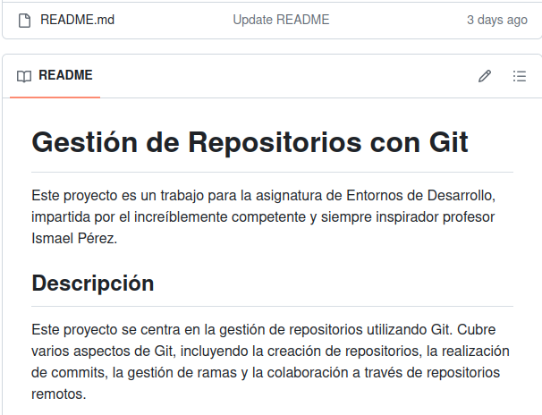
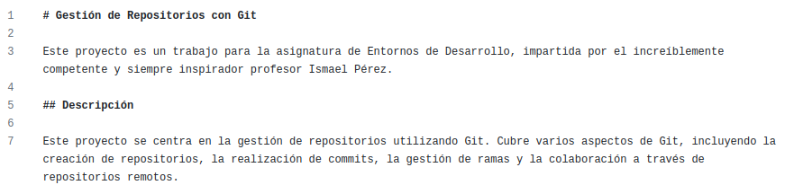
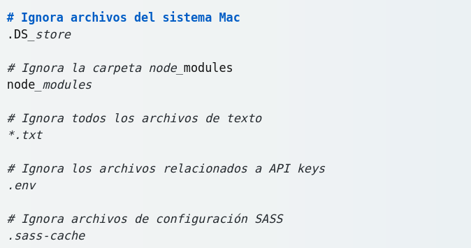

Parte 1
¿Cómo podemos crear un repositorio remoto?
Para crear un repositorio remoto en GitHub, puedes seguir estos pasos:
Para crear un repositorio remoto en GitHub, puedes seguir estos pasos:
1. Inicia sesión en tu cuenta de GitHub
2. Haz clic en el signo “ ” en la esquina
superior derecha y selecciona “Nuevo repositorio”.
” en la esquina
superior derecha y selecciona “Nuevo repositorio”.
3. Escribe un nombre para tu repositorio en el campo “Nombre del repositorio”.
4. Puedes añadir una descripción de tu repositorio en el campo “Descripción” (esto es opcional).
5. Selecciona si quieres que tu repositorio sea público  (visible para todos) o privado
(visible para todos) o privado  (solo
visible para ti
y
las personas que invites).
(solo
visible para ti
y
las personas que invites).
6. Puedes inicializar tu repositorio con un archivo README, un .gitignore o una licencia si lo deseas. Estos
pasos también son opcionales.
7. Haz clic en “Crear repositorio”.
¡Y eso es todo! Ahora tienes un repositorio remoto en GitHub. Recuerda que para trabajar con este
repositorio en
tu máquina local, tendrás que clonarlo o conectarlo con un repositorio local existente.

¿Qué es el README.md?
El archivo README.md es un archivo de texto que se encuentra en la raíz de tu
repositorio.
Es la primera
cosa que ven las personas cuando visitan tu repositorio en GitHub.

El README.md se utiliza para describir el proyecto, cómo usarlo, cómo contribuir a él, y cualquier otro
detalle que pueda ser útil para los usuarios o colaboradores.
El .md significa que está escrito en Markdown  , pero ya hablamos de ello en la
siguiente pregunta
, pero ya hablamos de ello en la
siguiente pregunta
¿Qué es Markdown?
Es un lenguaje de marcado ligero diseñado para hacer más sencilla la escritura web  . Permitiendo a los
usuarios dar formato a su texto sin tener que usar HTML y CSS. Markdown te permite escribir elementos de
formato como negrita, cursiva, encabezados, listas…
Fue diseñado principalmente para la web, pero a día de hoy se puede utilizar para cualquier tipo de texto.
No hay un estándar definido, por lo cual hay diversas variantes para corregir detalles o añadir
características no incluidas.
. Permitiendo a los
usuarios dar formato a su texto sin tener que usar HTML y CSS. Markdown te permite escribir elementos de
formato como negrita, cursiva, encabezados, listas…
Fue diseñado principalmente para la web, pero a día de hoy se puede utilizar para cualquier tipo de texto.
No hay un estándar definido, por lo cual hay diversas variantes para corregir detalles o añadir
características no incluidas.
Un ejemplo de Markdown es el README.md, como vimos antes, y su código es el siguiente:

¿Qué son y qué utilidad tienen las licencias?
Una licencia de software  es un acuerdo legal entre el desarrollador de software y el usuario. Este acuerdo
describe los derechos y responsabilidades del usuario al usar el software. Las licencias de software pueden
ser de pago o gratuitas
es un acuerdo legal entre el desarrollador de software y el usuario. Este acuerdo
describe los derechos y responsabilidades del usuario al usar el software. Las licencias de software pueden
ser de pago o gratuitas 
Las licencias de software son importantes por varias razones:
1. Protegen los derechos del desarrollador  :
Las licencias de software a menudo protegen los derechos de
propiedad intelectual del desarrollador de software, como derechos de autor, patentes y marcas registradas.
Esto significa que el software no se puede reproducir, distribuir, modificar ni utilizar para ningún otro
fin que no sea el especificado en el acuerdo.
:
Las licencias de software a menudo protegen los derechos de
propiedad intelectual del desarrollador de software, como derechos de autor, patentes y marcas registradas.
Esto significa que el software no se puede reproducir, distribuir, modificar ni utilizar para ningún otro
fin que no sea el especificado en el acuerdo.
2. Establecen términos de uso  : Una
licencia
de software describe las restricciones sobre cómo se puede usar
el software, como la no ingeniería inversa o el uso comercial. También otorga al usuario permiso para
instalar y usar el software en un solo dispositivo o en una red de dispositivos, según los términos del
acuerdo.
: Una
licencia
de software describe las restricciones sobre cómo se puede usar
el software, como la no ingeniería inversa o el uso comercial. También otorga al usuario permiso para
instalar y usar el software en un solo dispositivo o en una red de dispositivos, según los términos del
acuerdo.
3. Previenen el uso ilegal: El incumplimiento de la licencia, o el empleo del software sin ella, pueden ser
muy perjudiciales para la empresa, tanto económica como socialmente.
Existen diferentes tipos de licencias de software, cada una con sus propias reglas y restricciones.
Algunos
ejemplos incluyen licencias perpetuas, de suscripción, de código abierto y EULA. Es importante leer y
comprender los términos de la licencia del software antes de aceptarlos.
¿Qué es el fichero .gitignore?
El archivo .gitignore es un archivo de texto que le dice a Git qué archivos o carpetas debe ignorar en un
proyecto. Un archivo local .gitignore generalmente se coloca en el directorio raíz de un proyecto.
También puedes crear un archivo global .gitignore, y cualquier entrada en ese archivo se ignorará.
Cada nueva línea en el archivo .gitignore debe incluir un archivo o carpeta adicional que quieras que Git
ignore. Las entradas de este archivo también pueden seguir un patrón coincidente:
• * se utiliza como una coincidencia comodín.
• / se usa para ignorar las rutas relativas al archivo .gitignore.
• # es usado para agregar comentarios.
Este es un ejemplo de cómo puede lucir el archivo .gitignore:

Explicar las tres formas de integrar el repo remoto en un repo local.
Existen tres formas de integrar un repositorio remoto en un repositorio local.
1.Clonar con HTTPS: Esta es la forma más común de clonar un repositorio ya que unicamente necesitarás la URL
 del repositorio que deseas clonar.
del repositorio que deseas clonar.
2.Clonar con SSH: Esta forma es menos utilizada ya que es más lenta por que necesitas haber configurado las
claves SSH en tu cuenta GitHub,
pero a la vez por eso es más seguro. 
3. Clonar con GitHub CLI: GitHub CLI es una herramienta que te permite interactuar con GitHub desde la línea
de
comandos. 
Puedes usarla para clonar repositorios, ejecutar flujos de trabajo o conectarse a un codespace entre muchas
otras cosas.
¿Cómo realizar un commit?
Para realizar un commit hay que seguir dos simples pasos:
1. Añade los cambios: Antes de guardar algún cambio, tienes que decirle a Git que cambios quieres incluir.

Para ello, puedes usar el comando git add seguido por el nombre del archivo que deseas incluir.
2. Realiza el commit: El comando commit se usa para confirmar los cambios en el área de preparación y
guardalo
en el repositorio local.
Es importante agragr un mensaje en el commit para identificar tus cambios. Para ello puedes usar la opción
-m
seguida de tu mensaje.
3. Opciones del comando commit:
-a: Esta opción confirma todos los archivos en el área de trabajo.
--amend: Esta opción reescribe el último commit con cualquier cambio que esté en el área de preparación.
4. Buenas prácticas:
- Usa el verbo en imperativo. Por ejemplo "Add","Change" o "Fix".
- No uses punto final ni puntos suspensivos en tus mensajes.
- El mensaje de commit tiene que ser claro y corto.
¿Cada cuanto hay que realizar un commit?
La frecuencia con la que debes realizar un commit en Git puede variar dependiendo del proyecto y del
flujo de trabajo que estés utilizando.Aun así lo recomendado es:
1. Cuando completes una tarea  o
característica
en tu proyecto: Por ejemplo, si acabas de añadir una
nueva función o corregir un bug, podría ser un buen momento para hacer un commit.
o
característica
en tu proyecto: Por ejemplo, si acabas de añadir una
nueva función o corregir un bug, podría ser un buen momento para hacer un commit.
2. Cuando sientas que es importante dejar un marcador que te sirva como registro  : Si has realizado
cambios significativos que quieres poder revisar más tarde, hacer un commit puede ser útil.
: Si has realizado
cambios significativos que quieres poder revisar más tarde, hacer un commit puede ser útil.
3. Divide el trabajo en commits  pequeños
:
Es más fácil entender los cambios si los divides en
pequeñas partes lógicas. Cada commit debe representar una unidad de trabajo completa y coherente.
pequeños
:
Es más fácil entender los cambios si los divides en
pequeñas partes lógicas. Cada commit debe representar una unidad de trabajo completa y coherente.
4. Commits funcionales  : Cada commit
debe
contener cambios que funcionalmente estén completos sin que
rompa el código, unit test o proceso de build que tengas establecido.
: Cada commit
debe
contener cambios que funcionalmente estén completos sin que
rompa el código, unit test o proceso de build que tengas establecido.
¿Cómo podríamos trabajar varias personas en el mismo proyecto?
Para trabajar varias personas en un proyecto de GitHub se ha de agragar colaboradodes  en la
configuracion del repositorio, escribiendo el correo electronico
en la
configuracion del repositorio, escribiendo el correo electronico  asociado a su cuenta o el nombre
de
usuario
de GitHub.
asociado a su cuenta o el nombre
de
usuario
de GitHub.
Una vez esten añadidos los colaboradores han de clonarse el repositorio para tenerlo local
y asi trabajar en el proyecto. En varios foros y páginas he visto que es recomendable que cada miembro del
equipo trabaje en una rama  separada para cada tarea. Esto ayuda a mantener el código organizado.
separada para cada tarea. Esto ayuda a mantener el código organizado.
Una vez los
colaboradores hagan cambios en el código, tienen que hacer commits de sus cambios y luego hacer push de
estos commits a la rama correspondiente en el repositorio de GitHub.